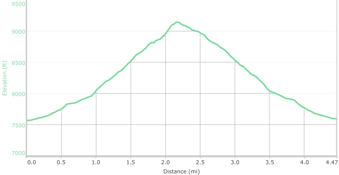

Hike New Mexico
w/ Tom & Ken
Atalaya Mountain Hike
| Difficulty | Round-trip | Type | Elev. Chg. | Exposure | Wow Factor | Facilities | Seasons | Flickr | By Car |
|---|---|---|---|---|---|---|---|---|---|
| Medium | 4.7 miles | Out-and-back | 1500 ft | Fairly shady | Local views | None | Not Winter | Album |  |



- May 31, 2016: Don and Tom pause for a break at the top
- May 31, 2016: Looking south to the Sandias
- May 31, 2016: View of Sun Mountain from Atalaya
- https://www.flickr.com/photos/139088815@N08/27435733881/in/photostream/
- https://www.flickr.com/photos/139088815@N08/27473357626/in/photostream/
- https://www.flickr.com/photos/139088815@N08/27231343720/in/photostream/
Atalaya Mountain is reached via Old Santa Fe Trail in Santa Fe city limits. It is a popular local area hike, and the trail is adjacent to the Dorothy Stewart Trail and the Dale Ball Trail System of Santa Fe. Atalaya Mountain is on the south end of the Sangre de Cristos, and offers very nice views of the area. Since it is a popular hike, it is advisable to arrive early or the small parking area at the upper trailhead will be full, and there are no adjacent parking places. An alternative is to park in the St John's College Parking Lot and hike the extra distance - signs for the trail are provided.